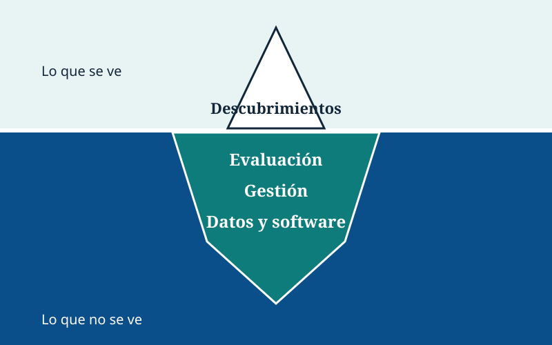

El problema
El CONICET recibe muchísimas postulaciones a becas, a la carrera de investigador y a proyectos. Encontrar a las personas adecuadas para evaluarlas era una tarea manual que podía llevar semanas.
IA en la gestión del CONICET
Ciencia, Tecnología y Sociedad
Cuando pensamos en ciencia imaginamos laboratorios y descubrimientos. ¿Pero quién decide qué proyectos y qué personas avanzan? ¿Y qué pasa cuando una inteligencia artificial ayuda a tomar parte de esa decisión?

El CONICET recibe muchísimas postulaciones a becas, a la carrera de investigador y a proyectos. Encontrar a las personas adecuadas para evaluarlas era una tarea manual que podía llevar semanas.
El ISISTAN (CONICET-UNCPBA, Tandil) desarrolló junto con el CONICET una herramienta de IA que analiza la producción científica y sugiere especialistas. La decisión final sigue en manos de las comisiones.
No es solo qué puede hacer la IA, sino quién define sus criterios, cómo se controla y qué actores participan. Una tecnología que organiza la ciencia también distribuye poder.